04/05/2026 — Rối loạn ý thức cấp, ST chênh lên, sóng T tối cấp và sóng T đảo ngược tiến triển. OMI?
Bản dịch tiếng Việt của bài "Acute altered mental status, ST Elevation, Hyperacute T-waves, and evolving T-wave inversion. OMI?" – Dr. Smith’s ECG Blog. Giữ nguyên toàn bộ 17 hình ảnh của bản gốc.
Đội cấp cứu ngoài viện (EMS) được gọi tới một ngôi nhà vì một tín hiệu “life alert” (một thiết bị đơn giản mà bệnh nhân dùng để gọi trợ giúp y tế khi ở ngoài bệnh viện). Khi tới nơi, đội phát hiện một phụ nữ ở độ tuổi 60 nằm trên sàn nhà, rối loạn ý thức và suy hô hấp. Đường huyết bình thường. Các dấu hiệu sinh tồn đáng chú ý: giảm oxy máu, tăng huyết áp nặng 280/160 mm Hg và nhịp nhanh 133 lần/phút. Một điện tâm đồ được ghi trong lúc vận chuyển:

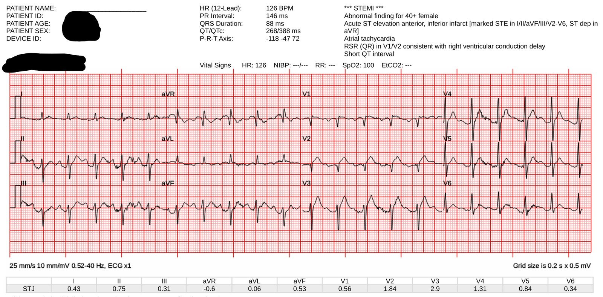
Có nhịp nhanh — điều này luôn khiến chẩn đoán nhồi máu cơ tim do tắc (OMI) trở nên đáng ngờ, trừ khi có sốc tim. ST chênh lên và sóng T tối cấp (hyperacute T wave) ở V2, có lẽ cả ở V3. (Điểm HATW định lượng của chúng tôi là 0.6).
Đây là kết quả đọc của Queen (điểm là 0.35; dương tính khi >0.50):

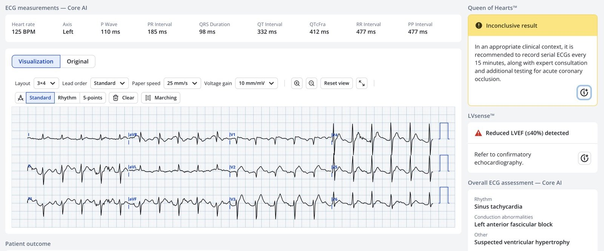
Điện tâm đồ được truyền tới khoa cấp cứu (ED) tiếp nhận.
Khi đến nơi, bệnh nhân được đặt nội khí quản vì rối loạn ý thức và suy hô hấp, đồng thời tiếp tục hồi sức ban đầu. Một điện tâm đồ được ghi:

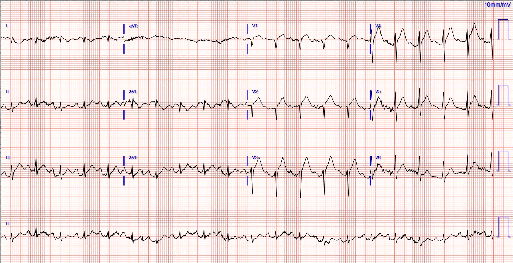
Cả hai điện tâm đồ trên đều cho thấy nhịp nhanh xoang với ST chênh lên (STE) bất thường ở vùng trước bên và sóng T tối cấp (điểm HATW của chúng tôi là 94%!!) Những dấu hiệu này chắc chắn phù hợp với tổn thương xuyên thành cấp của thành trước (mà nguyên nhân thường gặp nhất là nhồi máu cơ tim do tắc động mạch vành cấp).
Đây là kết quả đọc của Queen nếu nghi ngờ hội chứng vành cấp (ACS) cao:

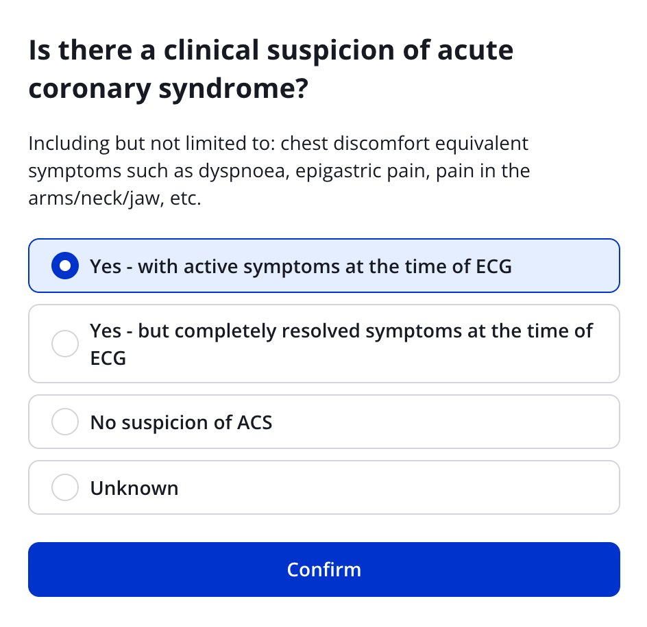

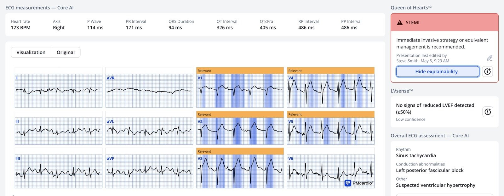
Điểm là 0.98 (rất chắc chắn)
Đây là kết quả đọc của Queen nếu nghi ngờ ACS thấp:

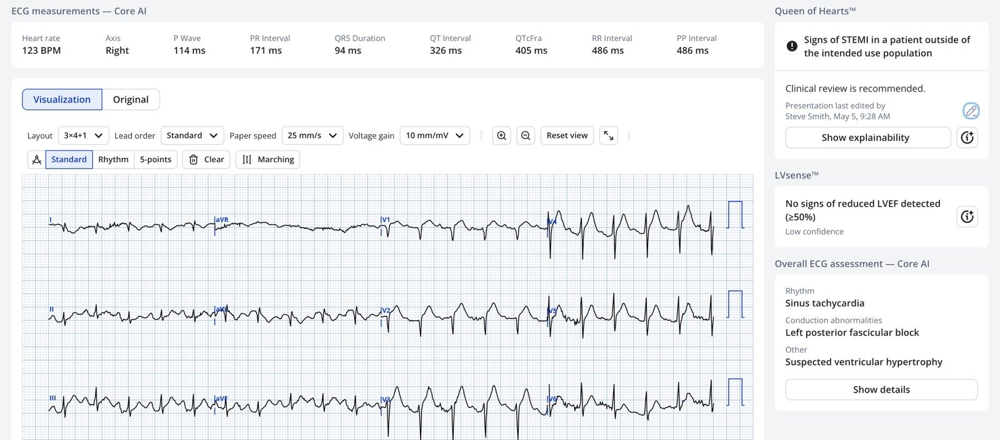
Ca bệnh tiếp diễn
Đã kích hoạt báo động STEMI (Code STEMI), nhưng bác sĩ tim mạch đã hủy vì cho rằng bệnh sử và điện tâm đồ không rõ ràng.
CT sọ não không có chảy máu cấp, nhưng có một “nhồi máu ổ khuyết không xác định được tuổi”.
Siêu âm tim qua thành ngực tại giường làm khẩn cho thấy EF 30%, giảm động thất trái nặng, chừa vùng mỏm, cùng với chức năng thất phải giảm nặng nhưng chức năng thành tự do vùng đáy được bảo tồn. Kết quả được đọc là đáng lo ngại cho “bệnh cơ tim do stress hoặc bệnh mạch vành nhiều nhánh”.
Điện tâm đồ ghi lại 1 giờ sau khi đến viện:

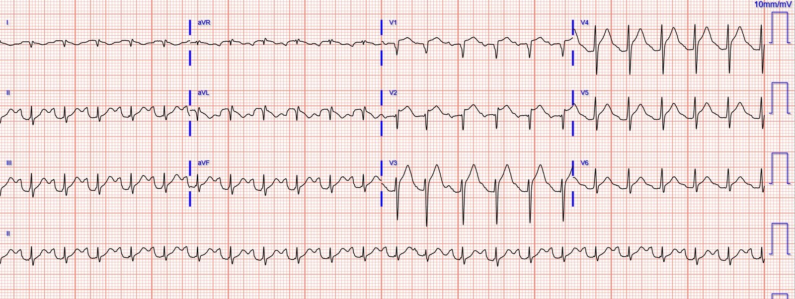
Troponin I ban đầu là 646 ng/L.
Bệnh nhân được đưa vào phòng thông tim (cath lab) khoảng 4 giờ sau khi đến viện, tại đây người ta chỉ mô tả bệnh mạch vành (CAD) lan tỏa mức độ nhẹ ở tất cả các nhánh (không ghi % hẹp cho nhánh nào), không có tổn thương gây tắc nghẽn. Không thực hiện siêu âm trong lòng mạch (IVUS).
Bệnh nhân được nhập khoa hồi sức nội khoa (MICU).
Các lần đo troponin tiếp theo:
- 1,511 ng/L
- 2,546 ng/L
- 856 ng/L
- (không chỉ định đo thêm)
Điện tâm đồ ghi lại 6 giờ sau:

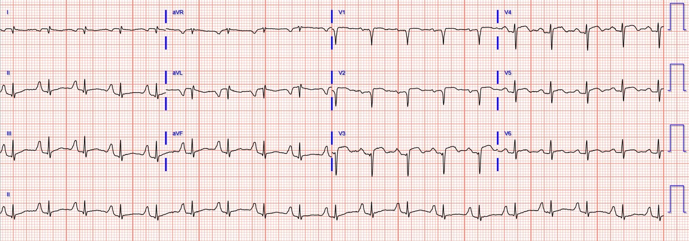
Điện tâm đồ ghi lại vào ngày hôm sau (khoảng 18 giờ sau khi đến viện):

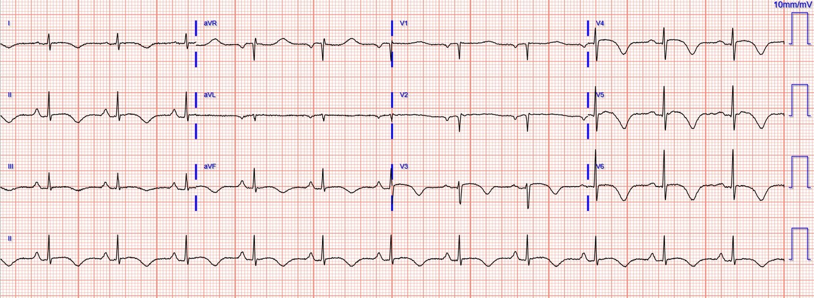
Điện tâm đồ ghi lại vào ngày 3:

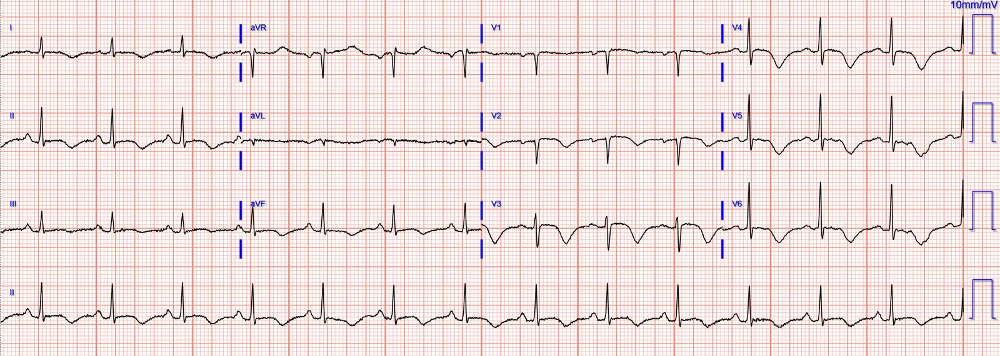
Bệnh nhân đang chờ chụp MRI và đánh giá thần kinh đầy đủ sau khi rút nội khí quản, nhưng chẩn đoán tạm thời là đột quỵ cấp/bán cấp gây bệnh cơ tim takotsubo/do stress.
Một số ghi chú và ý kiến về bệnh cơ tim takotsubo / bệnh cơ tim do stress:
- Kinh nghiệm của chúng tôi phù hợp với một số ít y văn cho thấy nhiều bệnh nhân này trải qua một diễn tiến điện tâm đồ động, bao gồm
- một giai đoạn đầu với các dấu hiệu có thể không phân biệt được với nhồi máu cơ tim do tắc động mạch vành cấp
- một giai đoạn chuyển tiếp trong vòng vài giờ hoặc vài ngày sang sóng T đảo ngược sâu và toàn bộ, kèm QT kéo dài dần
- https://pubmed.ncbi.nlm.nih.gov/30309474/
- https://pubmed.ncbi.nlm.nih.gov/32702407/
- Queen of Hearts rất giỏi nhận diện các tình trạng giả OMI (giảm dương tính giả từ 42% xuống 8% đồng thời cải thiện độ nhạy), nhưng takotsubo là một tình trạng mà Queen chỉ nhận diện được khoảng 50%.
- Dù bệnh sử lâm sàng đôi khi có thể giúp phân biệt, cả điện tâm đồ lẫn siêu âm tim đều không dễ phân biệt takotsubo với OMI. Khi bệnh sử và điện tâm đồ phù hợp với OMI, chúng tôi cho rằng takotsubo chỉ là chẩn đoán thích hợp sau khi chụp mạch vành xác nhận không có vai trò của các liệu pháp tái tưới máu cấp.
- Nhịp nhanh (không có sốc) thường là một chỉ điểm nhẹ hướng ra xa khỏi bệnh lý ACS.
- Tuy nhiên, nhịp nhanh kèm sốc và chức năng thất trái kém, như trong ca này, hoàn toàn phù hợp với tắc động mạch vành cấp.
- Quan trọng: Manh mối quan trọng nhất cho thấy đây là takotsubo (hay “bệnh cơ tim do stress) chứ KHÔNG phải tắc động mạch vành cấp là biểu hiện lâm sàng rối loạn ý thức. Dĩ nhiên sốc có thể gây rối loạn ý thức, và nếu đánh giá lâm sàng phù hợp với sốc thì bệnh nhân cần được đưa vào phòng thông tim.
- Mặt khác, nếu “rối loạn ý thức” là hôn mê hoặc gần hôn mê, thì riêng sốc tim sẽ không gây ra tình trạng này. Một ca như vậy sẽ là
- 1) một thảm họa nội sọ (tức là, thường là chảy máu nội sọ) kèm takotsubo, HOẶC
- 2) 2 bệnh lý xảy ra đồng thời (tức là, đột quỵ và OMI cấp).
- Mặt khác, nếu “rối loạn ý thức” là hôn mê hoặc gần hôn mê, thì riêng sốc tim sẽ không gây ra tình trạng này. Một ca như vậy sẽ là
Dưới đây là 2 ca liên quan, kèm điện tâm đồ lúc nhập viện:
Xem: Acute coma, then Sudden PEA arrest in front of paramedics, with STEMI?

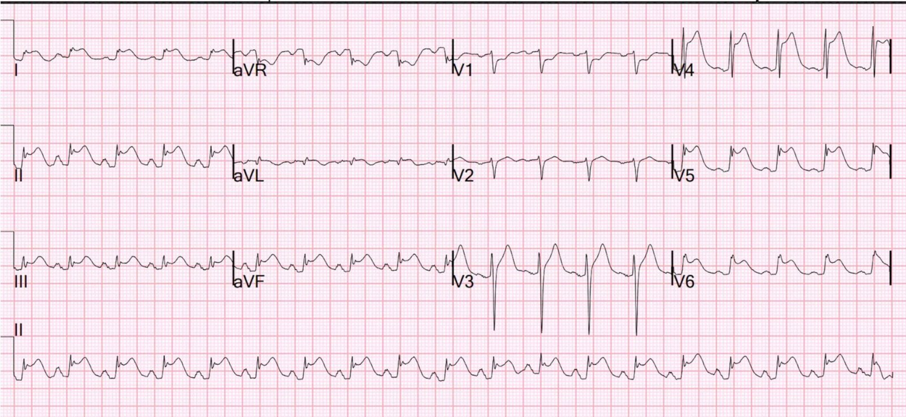
Xem: Collapse, Ventricular Tachycardia, Cardioverted, Comatose on Arrival. OMI is a clinical diagnosis.

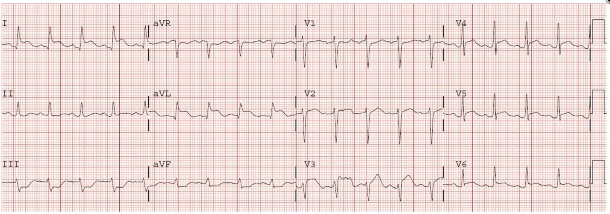
Và đây là một bệnh nhân đột quỵ khác: Spiked Helmet Sign

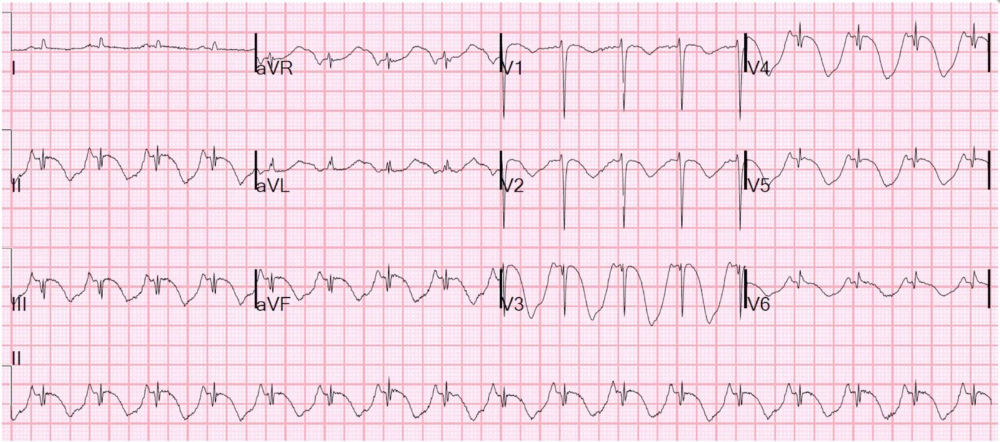
= = =
==================================
BÌNH LUẬN CỦA TÔI, bởi KEN GRAUER, MD (4/5/2026):
Khi lần đầu nhìn thấy điện tâm đồ ban đầu của ca hôm nay (mà tôi đã đưa lại trong Hình 2 bên dưới) — tôi cảm thấy chắc chắn rằng bệnh nhân đang trong quá trình tiến triển một nhồi máu cơ tim cấp thành trước diện rộng (do tắc LAD cấp). Tuy vậy — một nhồi máu cơ tim cấp không biến chứng hiếm khi biểu hiện với nhịp nhanh xoang rõ rệt như chúng ta thấy trên bản ghi này trừ khi có “một điều gì khác” đang xảy ra.
- Với huyết áp ban đầu = 280/160 mmHg — bệnh nhân này rõ ràng không ở trong tình trạng sốc tim.
- Thay vào đó — tình trạng suy giảm ý thức của bệnh nhân được cho là hậu quả của một cơn đột quỵ đã khởi phát bệnh cơ tim Takotsubo (với cơn tăng vọt catecholamine đi kèm Takotsubo giải thích cho tình trạng nhịp nhanh).
- Những điểm CHÍNH được BS. Meyers nêu ra: — i) Nhịp nhanh (không có sốc) là một dấu hiệu nghiêng về một nguyên nhân khác với nhồi máu cơ tim không biến chứng; — và, ii) Có những lúc cả siêu âm tim lẫn điện tâm đồ đều không thể phân biệt một cách đáng tin cậy giữa Takotsubo và OMI (đó là lý do BS. Meyers khuyên không nên chẩn đoán bệnh cơ tim Takotsubo cho đến khi thông tim xác nhận không có vai trò của tái tưới máu cấp).
= = =
THÚ NHẬN: Như tôi đã thú nhận điều sau đây không ít lần trước đây: — Rất dễ bỏ sót bệnh cơ tim Takotsubo. Ngay cả những người thầy thuốc giàu kinh nghiệm đôi khi cũng quên nghĩ tới Takotsubo khi gặp một điện tâm đồ có ST chênh lên đáng lo ngại — đó là lý do ca hôm nay là một lời nhắc nhở hữu ích đến vậy.
- Vì lý do này — tôi đã đưa lại trong Hình 1 Bảng tóm tắt mà tôi đã đưa vào bài đăng ngày 21 tháng Bảy năm 2022 trên Dr. Smith’s ECG Blog, trong đó tôi điểm lại các dấu hiệu điện tâm đồ chính giúp nhận diện Takotsubo CMP (bệnh cơ tim – CardioMyoPathy).
= =
Hình 1: Các dấu hiệu điện tâm đồ trong thể “điển hình” của CMP Takotsubo — phỏng theo Namgung trên Clin Med Insights Cardiol (Xem phần bài viết).

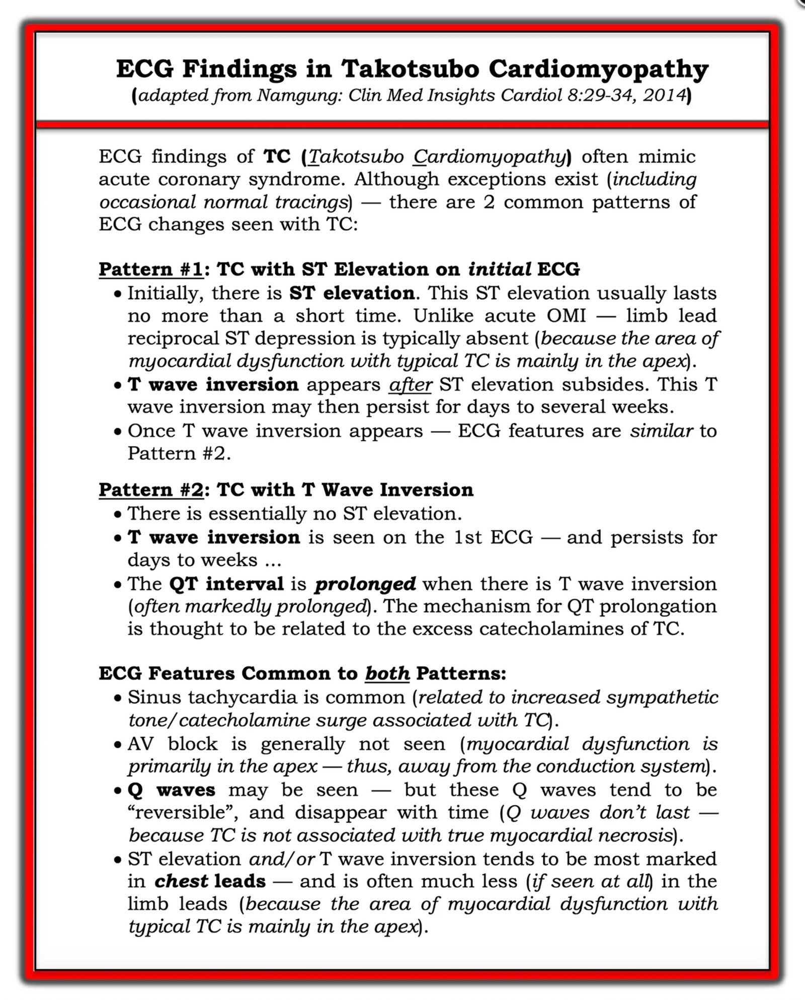
= = = = = = = = = = = =
Các điểm bổ sung giúp nhận diện CMP Takotsubo:
- Hãy nghĩ đến khả năng CMP Takotsubo khi gặp một bệnh nhân có điện tâm đồ bất thường rõ rệt nhưng không thật sự “khớp” với bệnh cảnh lâm sàng.
- Các dấu hiệu điện tâm đồ có thể không tương xứng với các dấu hiệu lâm sàng. Thay đổi điện tâm đồ có thể liên quan đến nhiều vùng chuyển đạo (đặc biệt là các chuyển đạo dưới và các chuyển đạo trước tim phía trước — vốn thường phản ánh vùng mỏm tim).
- Có thể có một phần yếu tố suy tim.
- Troponin huyết thanh có thể dương tính (dù thường không cao như mức dự kiến nếu xét theo mức độ rõ rệt của các thay đổi điện tâm đồ).
- Bệnh nhân thường gặp nhất là người lớn tuổi (đặc biệt là phụ nữ sau mãn kinh).
- Thường bệnh nhân đã trải qua một dạng stress nặng xảy ra trước đó.
- Bạn thường sẽ thấy QTc tăng rõ rệt.
= = = = = = = =
- LƯU Ý: Các vùng khác ngoài mỏm tim cũng có thể bị ảnh hưởng trong các rối loạn liên quan đến Takotsubo “điển hình”. Trong số đó có biến thể được gọi là Bệnh cơ tim (Cardiomyopathy) Takotsubo đảo ngược (Inverted, hay “Reverse”; xem Bình luận của tôi trong bài đăng ngày 21 tháng Bảy năm 2022 để biết thêm về Takotsubo “đảo ngược”).
= = =
Quay lại với CA BỆNH hôm nay:
Để rõ ràng, trong Hình 2 — tôi đã chọn 4 trong số 6 bản ghi của ca hôm nay và đặt chúng cạnh nhau để tiện so sánh. Các điện tâm đồ liên tiếp này kể một câu chuyện — vì chúng cung cấp một manh mối quan trọng về nguyên nhân của ca hôm nay.
- Hãy lần theo diễn tiến của ca hôm nay qua 4 điện tâm đồ liên tiếp trong Hình 2. Xét đến Bảng tóm tắt trong Hình 1 — Bạn thấy những dấu hiệu gì?
- = = =
- Thử thách (Điểm cộng): Bạn có thấy “sự cố kỹ thuật” (technical misadventure) có mặt trong 2 bản ghi không?
= = =
Hình 2: So sánh giữa các điện tâm đồ #1, #2, #4, #5 trong ca hôm nay.

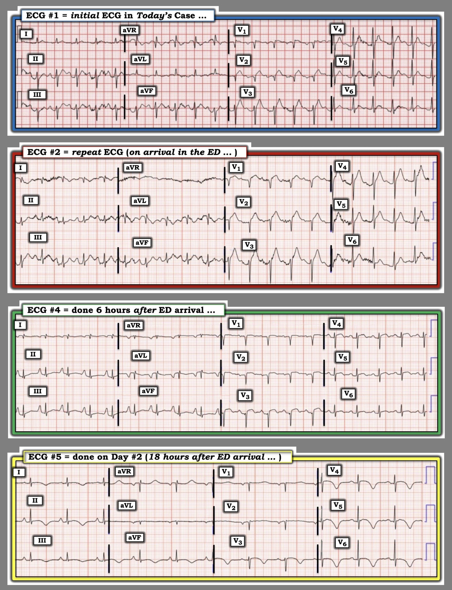
= = =
Suy nghĩ của tôi về các điện tâm đồ trong Hình 2:
Bệnh nhân hôm nay là một phụ nữ sau mãn kinh ở độ tuổi 60, được phát hiện trong tình trạng không đáp ứng, có lẽ do một cơn đột quỵ cấp. (Do bệnh nhân ở tình trạng không đáp ứng — chúng ta không biết liệu bà có đau ngực trước khi mất ý thức hay không). Huyết áp ban đầu = 280/160 mmHg của bệnh nhân.
- Điện tâm đồ #1 — cho thấy nhịp nhanh xoang rõ rệt với tần số ~125/phút. Ngoài ra còn có LAHB (QRS chủ yếu âm ở cả 3 chuyển đạo dưới) — tăng tiến sóng R chậm (QS ở các chuyển đạo V1,V2 — và chỉ có tối đa một sóng r nhỏ ban đầu ở chuyển đạo V3) — kèm ST chênh lên tối cấp ở các chuyển đạo V2,V3 (và ST chênh lên kín đáo hơn ở chuyển đạo V1) .
- Đáng chú ý vì vắng mặt — là sự không có ST chênh xuống soi gương.
- Nhận định ban đầu của tôi về điện tâm đồ #1: Tại thời điểm này — tôi nghi ngờ tắc đoạn gần LAD cấp. Tuy vậy, các dấu hiệu không mong đợi đối với một OMI không biến chứng bao gồm: i) Biểu hiện của một cơn đột quỵ cấp (không có dấu hiệu nào cho thấy bệnh nhân bị đau ngực trước biến cố); — ii) Nhịp nhanh xoang rõ rệt và huyết áp tăng vọt = 280/160 mmHg; — và, iii) Không có ST chênh lên ở chuyển đạo aVL, cũng như không có bất kỳ ST chênh xuống soi gương nào ở các chuyển đạo dưới — cả hai điều này thường được thấy ít nhất ở một mức độ nào đó trong OMI do tắc LAD đoạn gần cấp.
= = = = = = = = =
LƯU Ý: Tại thời điểm này — chúng ta có thể tiếp tục đánh giá 3 điện tâm đồ còn lại mà tôi đưa vào Hình 2 — NHƯNG — BẠN có nhận thấy hiện tượng âm toàn bộ (global negativity) (của sóng P, QRS và sóng T) ở chuyển đạo I của điện tâm đồ #2 không?
- Hiện tượng “âm toàn bộ” này (của sóng P, QRS và sóng T) ở chuyển đạo I không có trong điện tâm đồ #1!
- Hiện tượng âm toàn bộ ở chuyển đạo I này tiếp tục có mặt trong điện tâm đồ #4 (được ghi khi bệnh nhân vẫn còn ở khoa cấp cứu). Ngược lại — hiện tượng âm toàn bộ không còn thấy ở điện tâm đồ #5 (được ghi vào ngày hôm sau — có lẽ bởi một kỹ thuật viên điện tâm đồ khác).
- Điểm MẤU CHỐT: Với thuật ngữ “âm toàn bộ” ở chuyển đạo I — tôi muốn nói đến sự hiện diện của sóng P đảo ngược và sóng T đảo ngược — và — một sóng Q sâu và rộng hơn dự kiến với phần âm chiếm ưu thế (tức là, có thể thấy một sóng r nhỏ ở phần cuối QRS).
- Một sóng Q sâu với phần âm chiếm ưu thế của một QRS hẹp ở chuyển đạo I hầu như không bao giờ thấy được trong điều kiện bình thường — trừ khi có đảo điện cực, tim sang phải, hoặc một điện tâm đồ nền bất thường một cách kỳ dị.
- Và khi, ngoài một QRS chủ yếu âm ở chuyển đạo I bên trái — bạn còn thấy sóng P âm và sóng T âm trên một bản ghi mà tim sang phải đã bị loại trừ nhờ tăng tiến sóng R bình thường (như chúng ta thấy ở điện tâm đồ #2) — thì nguyên nhân gần như luôn luôn là do nhầm lẫn giữa điện cực tay trái và điện cực tay phải.
ĐIỀU CỐT LÕI: Tôi tin rằng có đảo điện cực LA-RA ở điện tâm đồ #2 và điện tâm đồ #4 (cũng như ở điện tâm đồ thứ 3 được ghi trong ca này, ghi tại khoa cấp cứu khoảng 1 giờ sau khi bệnh nhân đến).
- Để tiện tra cứu — chúng tôi điểm lại rất nhiều ví dụ về các dạng đảo điện cực khác nhau trong Research & Resources MENU xuất hiện ở đầu mọi trang của Dr. Smith’s ECG Blog.
- Tôi đã trích hình minh họa trong Hình 3 từ một số ví dụ đảo điện cực LA-RA của chúng tôi để làm nổi bật ảnh hưởng của dạng đảo điện cực thường gặp nhất này lên điện tâm đồ.
= = =
Hình 3: Ảnh hưởng của đảo điện cực LA-RA lên điện tâm đồ (Hình phỏng theo LITFL).

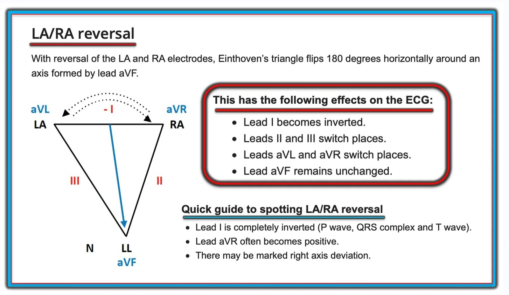
= = =
Hiệu chỉnh đảo điện cực LA-RA trong Hình 2:
Như gợi ý trong Hình 3 — chúng ta có thể “hiệu chỉnh” đảo điện cực LA-RA (và nhờ đó dự đoán điện tâm đồ sẽ trông như thế nào NẾU các điện cực chi được đặt đúng) bằng cách sau:
- Đảo ngược chuyển đạo I.
- Hoán đổi vị trí chuyển đạo II với chuyển đạo III.
- Hoán đổi vị trí chuyển đạo aVL với aVR.
- Giữ nguyên chuyển đạo aVF.
= = =
Điểm MẤU CHỐT: Đối với ca hôm nay — để thuận tiện cho việc đánh giá các thay đổi cấp diễn ra qua 4 bản ghi liên tiếp trong Hình 2 — tôi đã thực hiện các thao tác trên với điện tâm đồ #2 và điện tâm đồ #4 trong Hình 4, nhằm dự đoán các bản ghi này lẽ ra sẽ trông như thế nào nếu các điện cực LA và RA được đặt đúng.
- Hãy XEM LẠI 4 bản ghi liên tiếp này trong Hình 4.
= = =
Hình 4: Tôi đã hiệu chỉnh đảo điện cực LA-RA vốn có ban đầu ở các điện tâm đồ #2 và #4. Giờ đây bạn sẽ đọc 4 bản ghi liên tiếp này như thế nào?

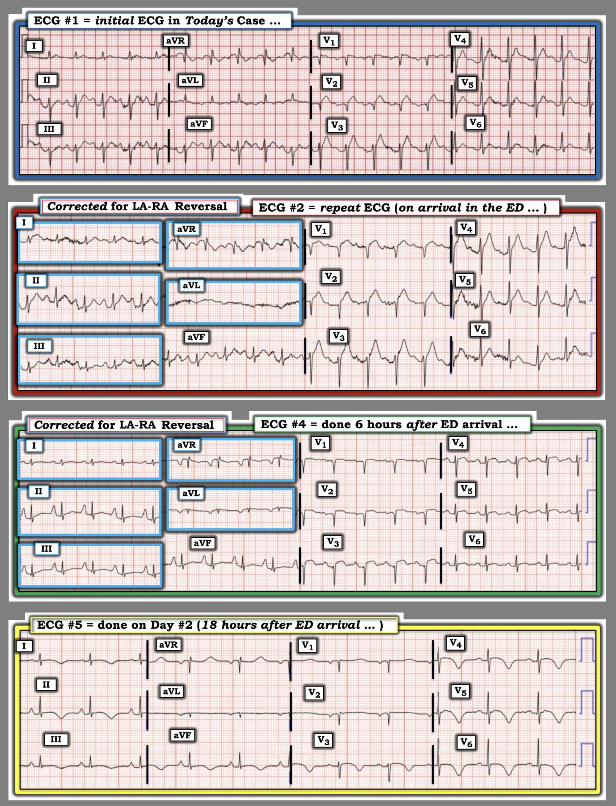
= = =
Tổng hợp lại tất cả:
- Sau khi hiệu chỉnh đảo điện cực ở điện tâm đồ #2 và #4 — lưu ý rằng sóng R ở chuyển đạo I giờ đây chủ yếu dương ở cả 4 bản ghi trong Hình 4. Cũng lưu ý rằng QRS giờ đây chủ yếu âm ở chuyển đạo aVR trong tất cả các bản ghi. Điều này chứng minh đã có đảo điện cực LA-RA trước đó trong Hình 2.
- Vượt ra ngoài phần cốt lõi: Lưu ý trong Hình 2 rằng dù có nhịp xoang ở cả 4 bản ghi — sóng P ở chuyển đạo III cao hơn sóng P ở chuyển đạo II trong các điện tâm đồ #2 và #4 ( = 2 bản ghi có đảo điện cực) — nhưng không như vậy ở điện tâm đồ #1 và #5. Và, trong Hình 4 (sau khi hiệu chỉnh đảo điện cực LA-RA) — sóng P ở cả 4 bản ghi đều cao hơn ở chuyển đạo II so với chuyển đạo III, đúng như phải có khi là nhịp xoang ( = thêm bằng chứng rằng đã có đảo điện cực LA-RA trước đó trong Hình 2).
- Các thay đổi tiến triển trong Hình 4 giờ đây hoàn toàn khớp với Kiểu #1 của CMP Takotsubo, như mô tả trong Hình 1:
- ST chênh lên bắt đầu ở các chuyển đạo trước của điện tâm đồ #1 — với ST chênh lên này tăng lên và lan rộng ở điện tâm đồ #2 tới 5 chuyển đạo trước tim đầu tiên — nhưng không có ST chênh lên thường gặp ở chuyển đạo aVL, và không có ST chênh xuống soi gương ở các chuyển đạo dưới vốn rất thường đi kèm một OMI do tắc đoạn gần LAD diện rộng.
- Và sau đó, trong một khoảng thời gian ngắn ở điện tâm đồ #4 (được ghi chỉ 6 giờ sau điện tâm đồ #2) — ST chênh lên đã gần như hết hoàn toàn — giờ đây với sóng T bắt đầu đảo ngược ở hầu hết các chuyển đạo trước tim, và mất hoàn toàn phần dương của sóng T ở các chuyển đạo dưới.
- Chỉ 12 giờ sau, ở điện tâm đồ #5 — tần số tim đã chậm lại (do cơn tăng vọt catecholamine trong giai đoạn sớm của CMP Takotsubo đã giảm dần) — và ST chênh lên giờ đây đã được thay thế hoàn toàn bằng sóng T đảo ngược đối xứng lan tỏa sâu nhất ở các chuyển đạo trước tim bên — đi kèm QTc kéo dài rõ rệt .
- Điểm Vượt ra ngoài phần cốt lõi cuối cùng: Lưu ý những thay đổi kích thước sóng P ở các chuyển đạo dưới trong Hình 4. Các sóng P cao, nhọn ở điện tâm đồ #4 dễ dàng vượt tiêu chuẩn 2.5 mm của RAA (bất thường nhĩ phải – Right Atrial Abnormality) — nhưng thực sự không vượt ở 3 bản ghi còn lại. Thay vì chỉ thuần túy phản ánh “kích thước” nhĩ — sự tăng áp lực nhĩ (do rối loạn chức năng thất trái) đôi khi có thể giải thích cho việc thỏa mãn tạm thời các tiêu chuẩn RAA hoặc LAA (với các tiêu chuẩn RAA có ở điện tâm đồ #4 đã biến mất vào thời điểm ghi điện tâm đồ #5).
= = =
= = =